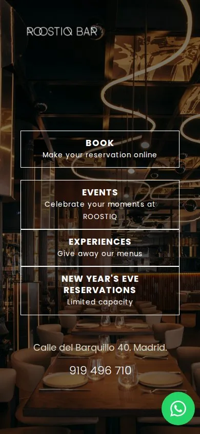

← All portfolio projects
WEBSITE STUDY · Restaurant
Roostiq Bar.
A restaurant and bar website using immersive visuals and food-focused messaging to express its open-fire culinary concept.
Explore this project05 / 06


EXPLORE THE WEBSITE
A closer look at the experience.
Selected original captures showing the design on desktop and mobile.
THE PROJECT
A closer look at the journey.
Roostiq leads with a recognizable cooking identity and atmosphere, encouraging visitors to explore the restaurant experience.
01
An unmistakable visual identity communicates the food concept.
02
Atmosphere plays a meaningful role in the browsing journey.
03
On-page navigation supports discovery without cluttering the first screen.